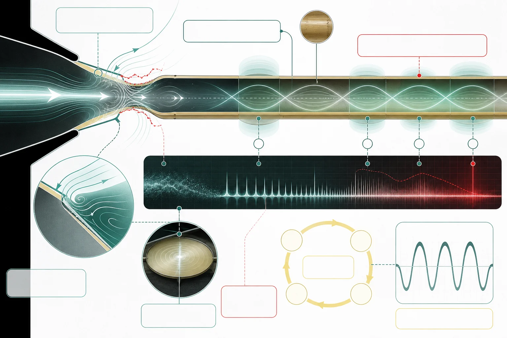

研究論文 · 2001
Acoustic impedances of classical and modern flutes
Joe Wolfe、John Smith、John Tann、Neville H. Fletcher
聲學與音律樂器結構與製作
未核實版權限制
主題索引
本頁彙集「管內氣柱」的專題與參考資料。目前收錄 2 筆來源，可由下列文章開始閱讀，再回來源查考。
12 項已記錄核對的陳述 · 1467 字正文
本頁達到站內正文門檻，並附核對來源。層級反映資料覆蓋，不等於外部專家認證；引用前請核對原文。 來源數依站內規則去重，尚未逐一追查相互引用的依賴關係。
1 篇
2 筆
研究論文 · 2001
Joe Wolfe、John Smith、John Tann、Neville H. Fletcher
